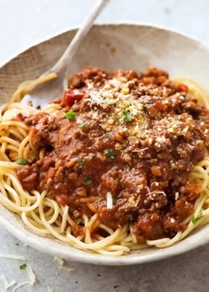

Spaghetti Bolognese

Spaghetti Bolognese Recipe
A plate consisting of strings of pasta as a base covered with a generous amount of beef.
Ingredients:
- Spaghetti
- Jarred marinara sauce
- Ground beef
- Extra-virgin olive oil
- Grating of mozzarella
Steps:
- Cook the spaghetti according to packet instructions / your own preferences. Drain when cooked.
- Meanwhile, place the olive oil in a large frying pan over a high heat for 1 minute. Add the beef mince, break up with a spatula and fry for 5 minutes, until nicely browned, stirring regularly.
- Divide the spaghetti between 4 plates, top with the bolognese sauce and sprinkle over the grated cheese. Alternatively, serve the cheese in a bowl on the table for everyone to help themselves.